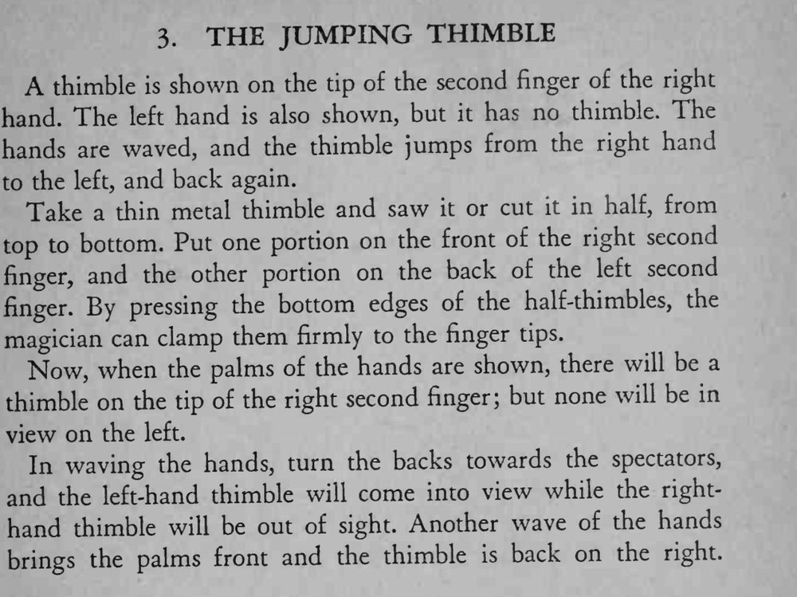

拇指套明明戴在右手上，双手一挥，拇指套跳到了左手上，再一挥又跳回右手。
半截拇指套要卡紧指尖，翻手时手腕转动要干脆，两手动作同步。

A thimble is shown on the tip of the second finger of the right hand. The left hand is also shown, but it has no thimble. The hands are waved, and the thimble jumps from the right hand to the left, and back again. Take a thin metal thimble and saw it or cut it in half, from top to bottom. Put one portion on the front of the right second finger, and the other portion on the back of the left second finger. By pressing the bottom edges of the half-thimbles, the magician can clamp them firmly to the finger tips. Now, when the palms of the hands are shown, there will be a thimble on the tip of the right second finger; but none will be in view on the left. In waving the hands, turn the backs towards the spectators, and the left-hand thimble will come into view while the righthand thimble will be out of sight. Another wave of the hands brings the palms front and the thimble is back on the right.